3. Processos
3.1. Comprovació dels fitxers i execució dels processos
Primer utilitzem la comanda ls -la per comprovar els
fitxers del directori i els seus permisos. Després executem l'script
sospitosos.sh, que inicia els processos de prova i
mostra el missatge «Fet. El servidor comença a anar lent…».
ls -la
./sospitosos.sh
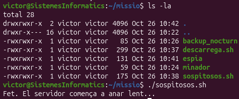
Posteriorment, busquem els processos sospitosos dins de l'arbre de
processos amb pstree. Les captures originals agrupen
els processos trobats per facilitar-ne la visualització.
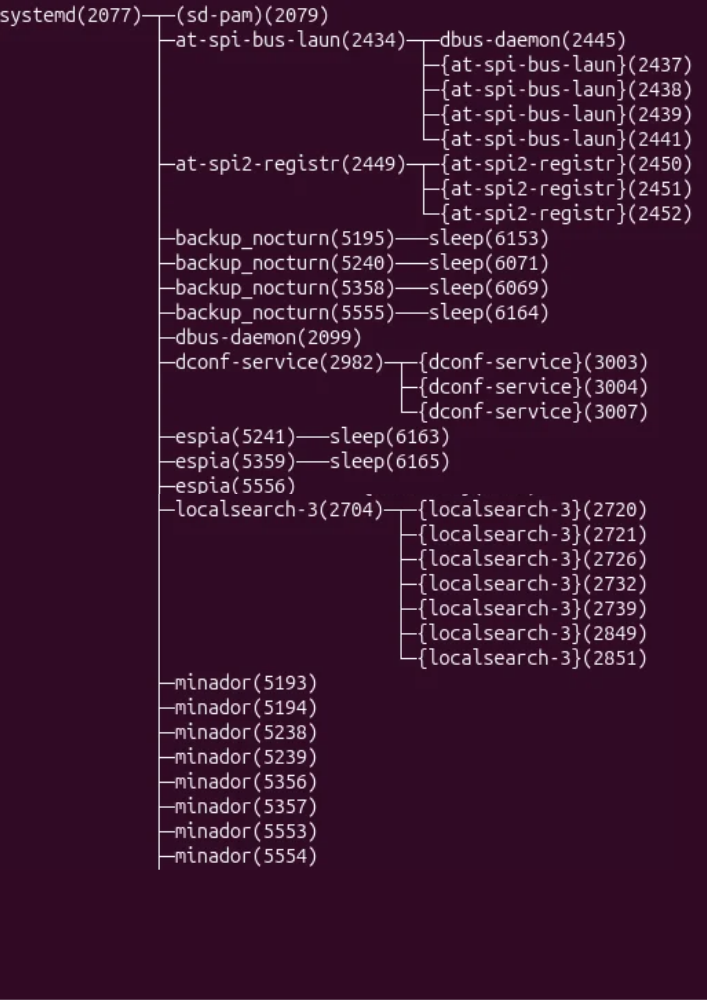
3.2. Identificació dels processos que consumeixen CPU
Executem top per observar els processos en execució.
Si premem la tecla P en majúscula, els processos es
mostren ordenats segons el consum de CPU. Això permet identificar
els processos anomenats minador que consumeixen més recursos.
top
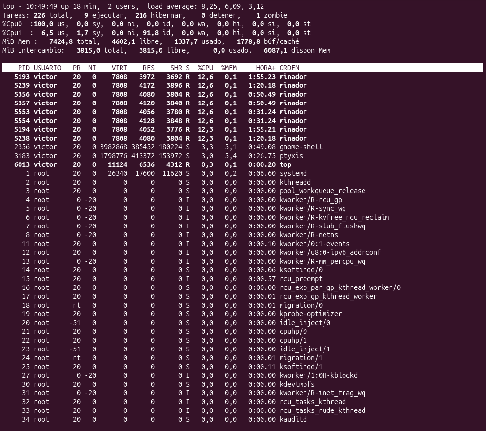
3.3. Consulta dels identificadors dels processos
Amb pgrep obtenim els identificadors (PID) dels
processos els noms dels quals coincideixen amb els termes
minador, espia o backup.
pgrep -l 'minador|espia|backup'
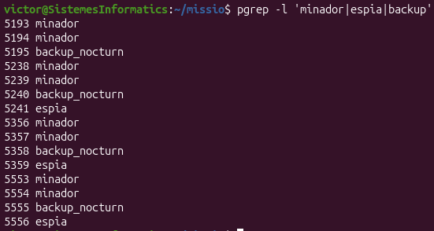
3.4. Comprovació del procés pare (PPID)
El PPID és l'identificador del procés pare d'un
procés. Comprovem si els processos identificats tenen com a pare
systemd, que apareix com a PID 1 en les captures.
Cal tenir en compte que els identificadors poden canviar quan es
reinicia la màquina virtual o es tornen a executar els processos.
(Aquesta captura compta amb IDs diferents degut a que és una captura posterior per reforçar el resultat simple de la primera)
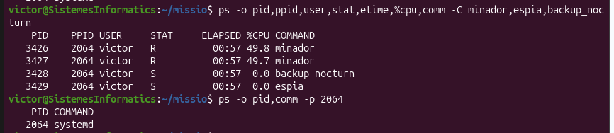
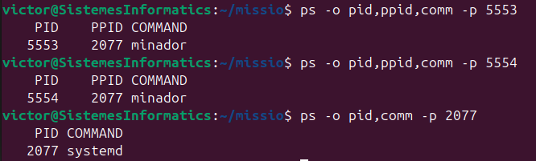
3.5. Seguiment d'una descàrrega
En aquesta part observem els processos relacionats amb una descàrrega
d'una ISO d'Ubuntu. A la terminal T1 es mostra la taula completa dels
processos en execució, mentre que a T2 es consulta l'estat actual
de la descàrrega.
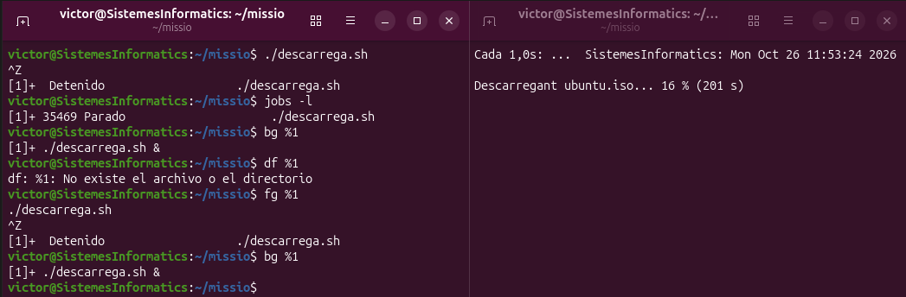
També utilitzem top per observar els processos
mentre la descàrrega continua avançant. La captura maximitzada
permet veure amb més claredat el nom del procés.
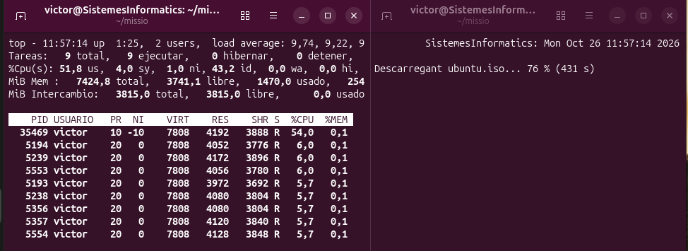
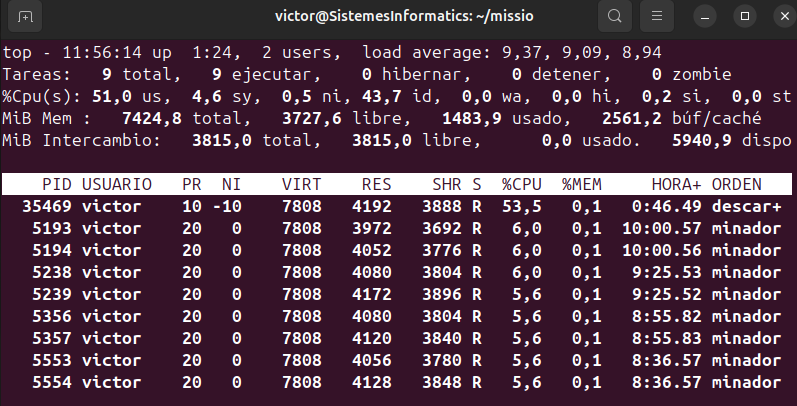
3.6. Eliminació dels processos
Intentem finalitzar els processos anomenats espia amb
la comanda kill. En el primer intent apareix un
error i el procés no s'elimina. Per forçar-ne la finalització,
utilitzem el senyal -9 amb el PID corresponent.
kill PID
kill -9 PID
Cal substituir PID per l'identificador real del procés
que volem finalitzar.
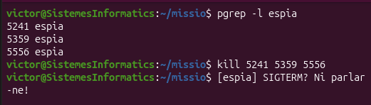
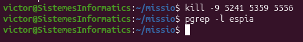
3.7. Pausa i represa dels processos de backup
També podem suspendre temporalment els processos de backup i reprendre
la seva execució posteriorment. Per fer-ho, utilitzem els senyals
STOP i CONT.
kill -STOP PID
kill -CONT PID
El primer senyal pausa el procés i el segon permet que continuï
executant-se. En tots dos casos, hem d'indicar el PID correcte.
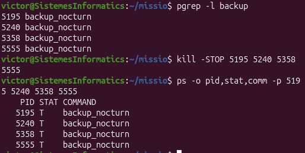
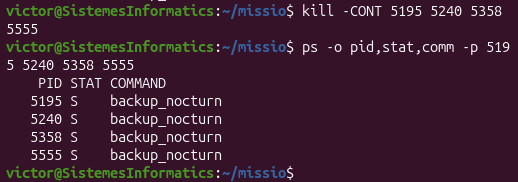
3.8. Comprovació final de l'arbre de processos
Finalment, utilitzem pstree per observar l'arbre
de processos. La T1 mostra el procés de descàrrega com a fill
de systemd. A l'altra terminal es pot veure la
interfície visual de la descàrrega de la ISO d'Ubuntu completada.
pstree -p
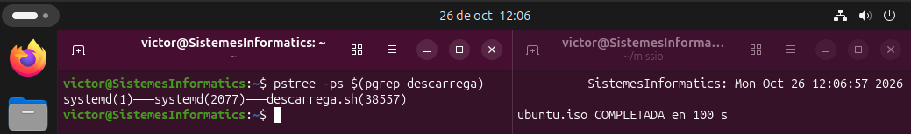
↑ Tornar a l'índex